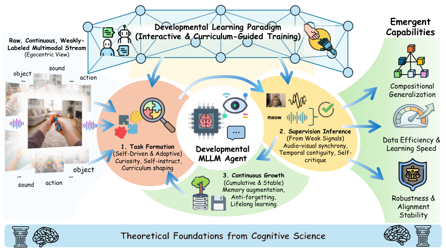
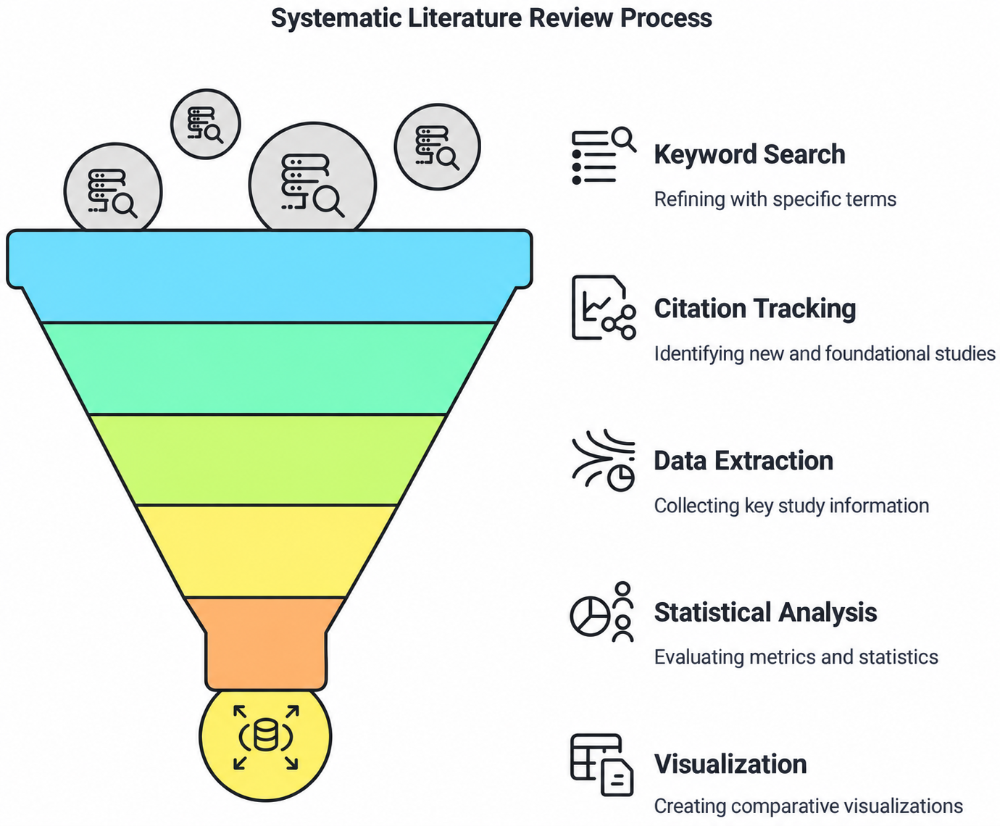
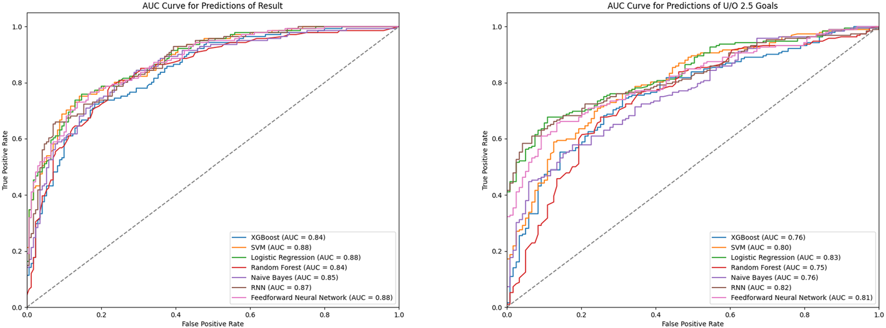
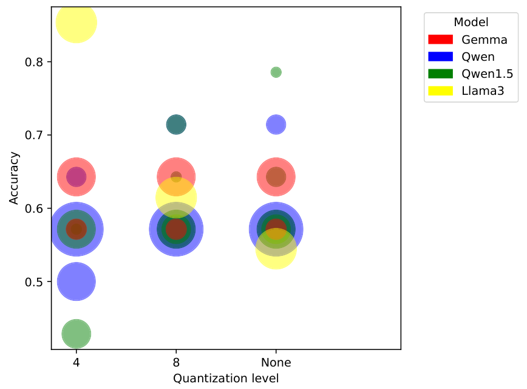

About Me
I am a master's student in Electrical and Computer Engineering at Carnegie Mellon University.
I am interested in multimodal learning and reliable language models. My research experience includes language model interpretability, rejection behavior, and cognitive screening.
Research interests
- Multimodal Large Language Models
- Computer Vision
- Reinforcement Learning
- Reliable Large Language Models
Education
Carnegie Mellon UniversitySep 2026 – Present
M.S. in Electrical and Computer Engineering
Kean UniversityAug 2022 – Jun 2026
B.Sc. in Computer Science · Minor in Mathematical Sciences
Experience
Institute of Software, Chinese Academy of SciencesJul – Sep 2024
Research Intern
Selected Publications
-

Position: Multimodal LLMs Should Learn from Children.
Yifan Shen, Chuanmiao Dong, Zhuoqing Zhong, Pei Tian, Tianjiao Yu, Jiateng Liu, Bowen Fang, Xinzhuo Li, Yuanzhe Liu, Zhengyuan Li, Chen Fang, Xu Cao.CVPR Workshops (CV4CHL), 2026, pp. 5619–5630.PDF Workshop -

Improving Negative Rejection Ability in Language Models: A Review of Fine-Tuned LLMs, RAG, and RAFT.
Bowen Li*, Zhuoqing Zhong*, Hengyu Zhang, Xubin Sun, Baha Ihnaini.Journal of King Saud University Computer and Information Sciences, 2026.PDF DOI -

Data-driven prediction of soccer outcomes using enhanced machine and deep learning techniques.
Ebenezer Fiifi Emire Atta Mills*, Zihui Deng*, Zhuoqing Zhong*, Jinger Li.Journal of Big Data, 2024.PDF DOI -

Evaluating Mild Cognitive Impairment using large language models: A comparative analysis.
Baha Ihnaini, Wei Liu, Zhuoqing Zhong*, Zihui Deng, Jiayi Xu, Ruoling Zhao.Biomedical Signal Processing and Control, 130, 111602, 2027.DOI


* Equal contribution.